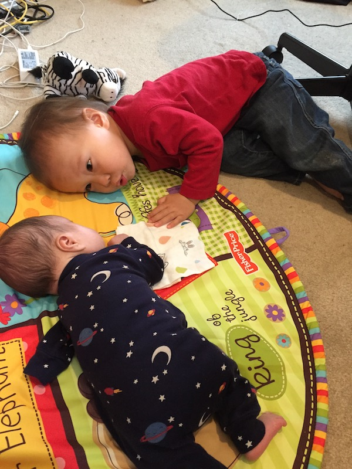

Update from Japan - June 2020
Samuel in the NICU
Update on the Surgery
We can’t express how grateful we are to be lifted up before God by you all, especially after the all that took place during the surgery. We are so grateful that God protected him throughout the entire process. Actually, we experienced our first three earthquakes since arriving in Japan (over three months ago now) – all during that one hour-long surgery! Needless to say, it was pretty stressful in the waiting room after that, and a powerful heart check for us as parents. We are always grateful for everyone who continually brings us before God, but we were extra grateful for everyone’s prayers in that moment, most of all because we know that you are not just praying for protection and safety, but even more than that you are praying for our hearts to remain steadfast in faith and grateful to God regardless of the end result.
I cannot think of how God could have shown His complete control over the situation in a more clear way. We know that God would be just as good and right whether or not the surgery had not ended according to what we wanted, but in His sovereignty He granted protection for our son in the surgery and has continued to do so throughout this recovery process. Despite the multiple earthquakes, there were no complications in the surgery, and now Samuel is back at home with us. 
Update regarding Housing
As of two weeks ago, we were staying on a local church campus which was nearby the Children’s hospital where Samuel was born and where the surgery was performed. This particular hospital, which particularly specializes in children with disabilities, is well-known throughout the region for its exceptional care and expertise. We were originally planning on having Samuel delivered at a regional hospital, which is also well-regarded and has a NICU, but does not have a neo-natal surgeon. This hospital told us that if we did not have the baby delivered at the Children’s Hospital, they would have to ambulance Samuel over to the Children’s Hospital for the surgery and aftercare, possibly via helicopter due to the distance. This being the case, the regional hospital recommended that we deliver at the Children’s Hospital instead.
The church we stayed at near the hospital Azumino, Japan, where the church and hospital are located
However, we were concerned about where we would stay. Since many travel from all over Japan to this Children’s Hospital to receive their specialized care, ordinarily there is housing provided by the hospital. However, due to the coronavirus, the hospital had to close this housing down temporarily. With some hotels in the area either closed or prohibitively expensive for long-term stay, it would have been quite difficult to make this work.
But God provided a way. Our friends who invited us here live far from the Children’s Hospital, but are members of a church that is a quick bicycle ride away. They were not meeting due to the coronavirus and so we could stay there without being in the way at all. We were so blessed by all of their care, helping to give rides, watching Jonathan when needed, and more.
However, as the coronavirus is calming down, the church is getting ready to begin gathering together in person, and though I’m sure we could stay longer if necessary, it seemed better if we looked for somewhere else to stay. We are so grateful that soon after we began to look, a nearby Christian retreat center told us that we could stay in one of their apartments, at less than half what we would have paid elsewhere. Lord willing, we will be able to stay here until we leave Japan.
Our current location in Karuizawa, Japan Sunset Point in Karuizawa
Perhaps what we are most grateful for in all of this is to see the Christian love that these Japanese brothers and sisters have shown to us, total strangers apart from our bond in Christ. The local church in particular has been going through several very difficult challenges lately, both externally and internally, but that did not hinder them in any way from blessing us even beyond their ability.
What’s Next
The doctors at the Children’s Hospital want to follow-up for at least another month or two, so we will be in Japan for another while longer.
Too cute Heading to the hospital in Azumino on the train
After that, we are hoping to return to ministry in Cambodia. We are grateful for how God is provided in Japan, but are ready to get back to the front line. In regard to the border situation, we are pleased to report that the coronavirus Cambodia’s borders have recently been reopened. There is the potential for some difficulty if we ended up flying there, and someone on the plane tested positive for the coronavirus, and so we are unsure if it would be wise to go with a young baby just yet, until this condition is changed as well. But it does seem that things are heading in a positive trajectory.
We can watch our church’s livestream from Japan!